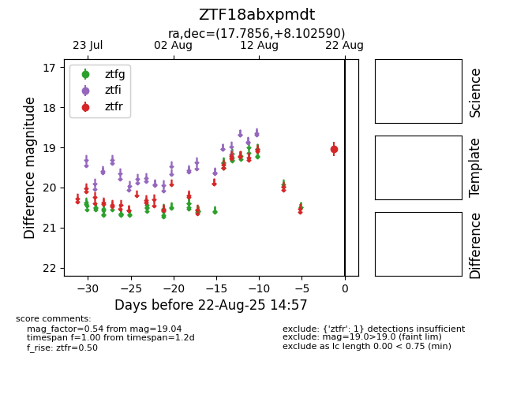

Target ZTF18abxpmdt at 2025-08-22 15:26, see:
FINK: fink-portal.org/ZTF18abxpmdt
Lasair: lasair-ztf.lsst.ac.uk/objects/ZTF18abxpmdt
ALeRCE: alerce.online/object/ZTF18abxpmdt
alt names
ZTF18abxpmdt (ztf,alerce)
coordinates:
equatorial (ra, dec) = (17.7856,+8.10259)
galactic (l, b) = (131.3392,-54.44719)
photometry
last ztfr=19.04
1 ztfr detections
